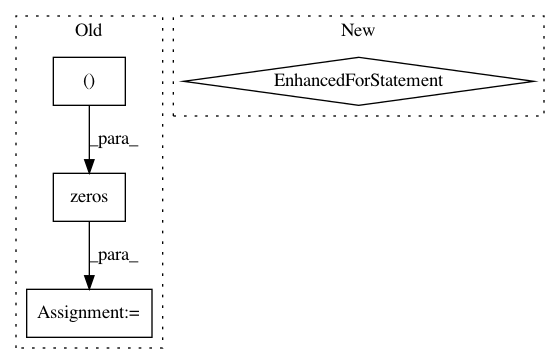

01b8f6eef41c36f12019adfc23ace2a100d77610,maml_rl/envs/sync_vector_env.py,SyncVectorEnv,__init__,#SyncVectorEnv#,6
Before Change
self.observation_space = observation_space
self.action_space = action_space
self._dones = np.zeros((self.num_envs,), dtype=np.bool_)
def seed(self, seeds=None):
if seeds is None:
seeds = [None for _ in range(self.num_envs)]
After Change
observation_space=observation_space,
action_space=action_space,
**kwargs)
for env in self.envs:
if not hasattr(env.unwrapped, "reset_task"):
raise ValueError("The environment provided is not a "
"meta-learning environment. It does not have "
"the method `reset_task` implemented.")
def reset_task(self, task):
for env in self.envs:
env.unwrapped.reset_task(task)
In pattern: SUPERPATTERN
Frequency: 3
Non-data size: 4
Instances
Project Name: tristandeleu/pytorch-maml-rl
Commit Name: 01b8f6eef41c36f12019adfc23ace2a100d77610
Time: 2019-11-24
Author: tristan.deleu@gmail.com
File Name: maml_rl/envs/sync_vector_env.py
Class Name: SyncVectorEnv
Method Name: __init__
Project Name: scikit-learn-contrib/DESlib
Commit Name: 3d5ab488d9bf0e5f5ec0ae52de6b30b9b807ff90
Time: 2018-04-01
Author: rafaelmenelau@gmail.com
File Name: deslib/des/des_knn.py
Class Name: DESKNN
Method Name: estimate_competence
Project Name: librosa/librosa
Commit Name: c7811e399b636c2514d6bc0b6013291541f1a3ed
Time: 2014-12-31
Author: brian.mcfee@nyu.edu
File Name: librosa/feature.py
Class Name:
Method Name: spectral_contrast